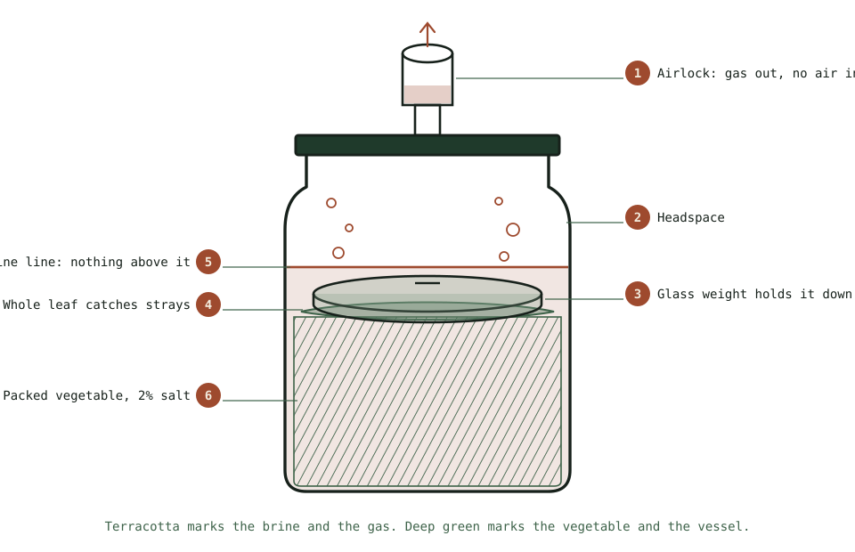

Guide
Yoghurt and Kefir, Which Work Differently
Milk ferments need a starter, need warmth, and finish in a day. Almost everything on the vegetable pages does not apply.
As an Amazon Associate this site earns from qualifying purchases. Links to products may be affiliate links. This costs you nothing extra and does not change what gets recommended. Nothing here is medical advice.
Milk ferments are the fastest thing in this hub and they follow rules that would be wrong for everything else in it.
No salt. No submersion. A starter culture is required rather than optional. And they finish in twelve to twenty four hours rather than three weeks. Almost nothing from the vegetable pages carries over except the general principle that bacteria are doing the work.
Worth knowing both, because they solve different problems and one of them is close to zero effort.

Why milk is different
Vegetables carry their own lactic acid bacteria, which is why sauerkraut needs nothing added. The fermenting hub covers that mechanism.
Milk does too, in raw form, but modern milk is pasteurised, which removes them along with everything else. So a starter has to be introduced.
Milk also has no structure to protect. There is nothing to hold under a brine, no oxygen exclusion problem, and no salt selecting between organisms. Instead, warmth does the selecting, since the cultures used are chosen to thrive at temperatures where most competitors do not.
The result is fast and predictable, and it is the closest thing in fermenting to a reliable recipe.
Yoghurt
What you need. Milk, and a starter that is either a spoonful of live yoghurt or a sachet of culture.
Heat the milk to about 85 degrees Celsius and hold it for ten minutes. This is optional for making yoghurt at all and it is what produces a thick result rather than a thin one, because it denatures the milk proteins so they set into a firmer gel. Skipping it gives runny yoghurt.
Cool to about 43 degrees. Warm enough for the culture and not hot enough to kill it. an instant read digital thermometer removes the guesswork, and without one it should feel warm rather than hot on the inside of your wrist.
Stir in the starter. Two tablespoons of live yoghurt per litre. Mix a little milk into the starter first, then combine, so it disperses evenly.
Hold it warm for six to twelve hours. Around 40 to 43 degrees is the target. An oven with only the light on, a thermos flask, a wrapped jar in a warm spot, or a dedicated yoghurt maker all work.
Check by tilting. It has set when it holds as a mass and pulls away from the side cleanly.
Refrigerate. It firms further as it cools, and the flavour sharpens over the first day.
Longer incubation gives a tarter, firmer result. Shorter gives milder and looser.
For thick Greek style, strain the finished yoghurt through a cloth or a fine sieve for two to four hours. Keep the whey; it is good in baking, in smoothies, and as a starter for vegetable ferments.
Save two tablespoons to start the next batch. Yoghurt propagates itself indefinitely this way, though after several generations the culture drifts and a fresh starter improves it.
Kefir
Kefir is easier than yoghurt in every respect except one: you need grains, and grains have to come from somewhere.
Kefir grains are not grains. They are small cauliflower-like clusters of bacteria and yeast in a polysaccharide matrix. They are alive, they grow, and they are passed between people or bought once. live milk kefir grains are sold as a live starter for exactly that.
The method. Put grains in a jar, cover with milk, leave at room temperature for twelve to twenty four hours, strain out the grains, and put them in fresh milk. That is the entire process, repeated indefinitely.
No heating. No thermometer. No cooling. Room temperature.
Roughly a tablespoon of grains per 500 ml of milk. More grains ferment faster.
Cover loosely with a cloth or a lid resting on top. Kefir produces some gas and a small amount of alcohol.
Strain with a plastic or stainless sieve. Avoid reactive metal.
The grains multiply. After a few weeks you will have more than you need. Give them away, or eat the surplus.
Taste decides timing. Twelve hours gives a mild drink. Twenty four gives a sharp, fizzy, distinctly sour one. Warmer is faster.
Kefir is more sour, thinner, and more complex than yoghurt, and it contains a broader range of organisms. It is also more forgiving, since there is no temperature to hit.
Which to make
Yoghurt if you want something thick to eat with a spoon, you are cooking with it, or you prefer a milder flavour. It needs equipment attention for one session and then nothing.
Kefir if you want the lowest possible ongoing effort, you prefer a drink, or you want a broader culture. It needs grains and then almost nothing forever.
Both if you drink one and eat the other, which many households do.
The honest difference in effort: yoghurt is a forty minute session every week or two. Kefir is thirty seconds a day, every day, and it does not pause. Grains left unfed will eventually decline, though they tolerate a week in the refrigerator in fresh milk.
Milk choices
Whole milk gives the thickest, richest result for both.
Semi skimmed works and produces a thinner yoghurt. Adding a few spoonfuls of milk powder compensates.
Skimmed makes thin yoghurt unless you add powder or strain it.
Ultra heat treated milk works well for yoghurt and skips the heating step, since it is already denatured.
Raw milk works and carries its own considerations, which vary by jurisdiction and are worth checking rather than assuming.
Non dairy milks. Kefir grains survive in them poorly and need periodic returns to dairy. Yoghurt from plant milks generally needs added thickener and a culture selected for it, and results vary considerably by brand.
Storage
Yoghurt keeps one to two weeks refrigerated. It continues souring slowly and separates a little, which is whey rising and is harmless. Stir it in or pour it off.
Kefir keeps one to two weeks refrigerated and continues fermenting more actively than yoghurt does. It will separate into curds and whey if left, which is normal and reversible by shaking.
Grains keep in fresh milk in the refrigerator for a week or two between uses. Change the milk when you can.
Both freeze poorly for eating and acceptably for culture preservation.
The storage guide covers the general principles, most of which apply here with shorter timescales.
Using them
Both keep better in the refrigerator than in a routine nobody follows, and having uses for them is what turns this into a habit.
Yoghurt. Breakfast with fruit and something crunchy. Marinades for chicken and lamb, where the acidity and enzymes tenderise. Raita and tzatziki. Stirred into a curry at the end off the heat, since boiling splits it. Substituted for soured cream on almost anything. Strained thick with a little salt as a spread.
Whey from straining. Excellent in bread dough in place of some of the water, in smoothies, and as a starter to kick off a vegetable ferment.
Kefir. Drunk plain, which takes some getting used to, or blended with fruit into something closer to a smoothie. In salad dressings, where its sourness does the job of both vinegar and cream. In pancake and soda bread batters, where the acidity reacts with bicarbonate and lifts them. Poured over granola.
Both. Frozen into ice lollies for children, which works better than either does frozen in bulk.
One consistent rule: heat destroys the cultures in both. If the live element is why you are making them, add them off the heat or use them cold. The flavour survives cooking; the culture does not.
RUN THE NUMBERS
Illustrative figures. Times vary with temperature and culture.
| Yoghurt | Kefir | |
|---|---|---|
| Starter | Live yoghurt or sachet | Grains, reusable forever |
| Heating | To 85 C, then cool to 43 C | None |
| Temperature | 40 to 43 C held | Room temperature |
| Time | 6 to 12 hours | 12 to 24 hours |
| Equipment | Thermometer, warm place | A jar and a sieve |
| Effort per batch | About 40 minutes attended | 30 seconds |
| Ongoing | Save a spoonful | Feed the grains daily |
| Result | Thick, mild, spoonable | Thin, sharp, drinkable |
A litre of milk produces a litre of either. The cost is the milk plus almost nothing, and against retail live yoghurt or kefir the saving is substantial for anyone who eats it regularly.
Keeping a culture alive long term
Both cultures are living things that need feeding, and losing one to neglect is the most common way people stop making either.
Yoghurt propagates from a spoonful of the last batch. In practice this drifts over generations, since the balance of organisms shifts each time, and after perhaps ten cycles the result becomes thinner or tarter than you want. Buying a fresh sachet or a new pot of live yoghurt resets it, which is a minor annual expense.
Freezing a starter works reasonably. Freeze a few tablespoons in an ice cube tray and thaw one when you need to restart.
Kefir grains need feeding continuously, which is the trade for their simplicity. They tolerate a week or two in fresh milk in the refrigerator, and longer than that they begin to weaken.
For a holiday, put the grains in a generous quantity of milk in the refrigerator. Three or four times the usual milk gives them enough to work through slowly.
Reviving neglected grains usually works. Move them to fresh milk at room temperature and change it daily for three or four days. They often recover fully. Grains that have gone slimy, smell wrong, or have turned yellow and hard are usually finished.
Surplus grains should be given away rather than discarded, since almost everyone who starts kefir got their grains from someone else.
WHAT GOES WRONG
Runny yoghurt. Milk not heated to 85 C first, incubated too cool, or not long enough. The heating step is what produces thickness.
Grainy or split yoghurt. Incubated too hot. Above about 46 C the proteins seize.
No set at all. Starter was dead, or the milk was still too hot when it went in. Check that your starter yoghurt says live cultures.
Kefir separating into curds and whey. Fermented too long or too warm. Shake it and strain earlier next time.
Kefir grains shrinking or not multiplying. Underfed, too much milk for the quantity of grains, or reactive metal contact. Feed more often.
Yeasty smell from kefir. Normal in small measure, since kefir contains yeasts as well as bacteria. Strongly beery means it went too long.
Nothing happening in cold weather. Both cultures slow markedly below about 18 C. Find a warmer spot.
DO THIS NOW
- For yoghurt, heat a litre of whole milk to 85 C, hold ten minutes, cool to 43 C, stir in two tablespoons of live yoghurt, and keep it warm for eight hours.
- Save two tablespoons of the result to start the next batch.
- For kefir, source grains from someone who has surplus, since almost everyone with grains does, or buy live milk kefir grains once and never again.
- Put the grains in milk at room temperature, strain after twenty four hours, and repeat with fresh milk.
Next
Milk ferments need very little equipment and the little they need is different from the vegetable kit. Fermenting equipment and what you can skip covers both.
Shelf life here is measured in weeks rather than months. Storing what you ferment covers how long each kind of ferment actually keeps.